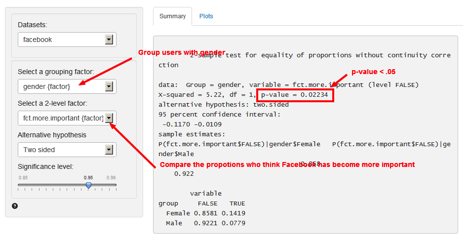

Base > Compare proportions
Compare proportions for two or more groups in the data
The compare proportions X-squared-test is used to compare the proportion of a variable for one sample in our data to the proportion of the same variable in one, or more, other samples.
This is important since we seldom have access to data for an entire population. The hypothesized value in the population is specified in the ‘Comparsion value’ box.
We can perform either a one-tailed test (i.e., less than or greater than) or two-tailed test (see ‘Alternative hypothesis’). In marketing we often use one-tailed tests because we want to evaluate if the available data provide evidence that a variable or effect is larger (or smaller) in one sample than another.
Example
We have access to data from Pew Internet & American Life Project on people’s Facebook habits and attitudes. We are interested in whether men and women have different habits and attitudes towards their use of Facebook.
You can find the information on people’s Facebook habits and attitudes in the facebook.rda dataset. The variable ‘more.important’ in the dataset stands for people’s responses to the question whether Facebook has become more important in people’s life (see the questionnaire for more information). Here 1 stands for “MORE important”. Another variable ‘more.time’ asks whether the subject has spent more time on Facebook last year (1=More). And ‘gender’ documents the subject’s gender (Male or Female).
Before we compare the proportions, we need to transform the dataset a little bit.
- Create a new variable ‘fct.more.important’ by ‘fct.more.important=factor(more.important==1)’

- Create a new variable ‘fct.more.time’ by ‘fct.more.time=factor(more.time==1)’
We want to know the attitudes and habits of Facebook users so that we can better deliver our advertisements. Let’s first see the attitudes. Our null-hypothesis is that the proportion of men and women who think Facebook is more important is equal.

Because the p-value is smaller than the conventional level of significance (i.e. 0.05) we can reject the null hypothesis based on the available sample. The data suggest that different proportions of men and women think that Facebook has become more important for them.
In addition to the numerical output provided in the Summary tab we can also evaluate the hypothesis visually (see Plots tab). The settings in the side-panel are the same as before.

It seems that men and women have different attitudes towards Facebook. How about their actual habits? We now use ‘more.time’ to test this. Our null-hypothesis is that the proportion of men and women who report that they have spent more time on Facebook last year is equal.

Because the p-value is greater than the conventional level of significance (i.e. 0.05) we cannot reject the null hypothesis based on the available sample. The data suggest that the proportions of men and women who spent more time on Facebook last year seem to be similar.